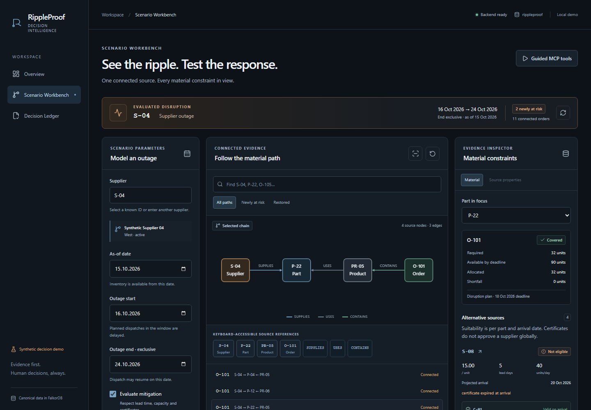
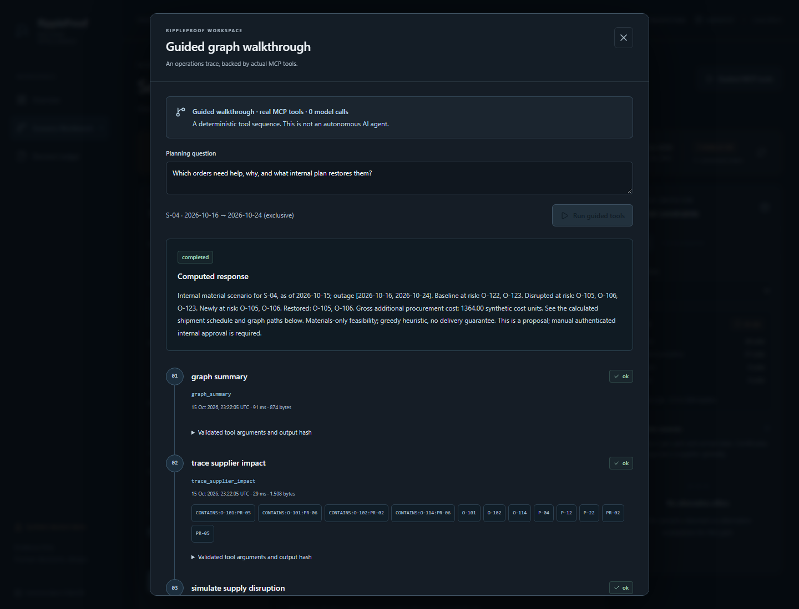

Field note 01 Graph Hacks 2026 Track 1
A Supplier Outage Isn't a Delayed Order: Building RippleProof AI with FalkorDB
How graph evidence, deterministic simulation, and constrained MCP tools help distinguish connected orders from real material shortages.
The surprising result
A supplier is unavailable. An order depends on that supplier. Is the order delayed?
Our synthetic supply chain makes that question awkward in a useful way. Supplier S-04 supplies part P-22, product PR-05 uses that part, and order O-101 contains eight of those products. Each needs four P-22 units: 32 units altogether. The dependency is real. So is the result: O-101 remains materially covered.
Building RippleProof AI for Graph Hacks 2026, Track 1 meant keeping those two facts separate. A graph can show where a disruption might propagate. Declaring a shortage requires quantities, arrivals and competition for shared inventory. Dependency is the beginning of the investigation.
01 / Start with the facts
Why relational evidence matters
FalkorDB holds suppliers, parts, products, orders, certificates and inbound shipments. SUPPLIES edges carry price, lead days and daily capacity; USES carries a bill-of-materials coefficient; CONTAINS carries order quantity. Certificate requirements and dated holdings connect parts and suppliers to certificates. These relationship properties make the path operationally useful.
This is the executable IMPACT_PATHS template, reproduced exactly. Supplier ID and order status are validated parameters, never concatenated query text.
MATCH evidence = (supplier:Supplier {id: $supplier_id})
-[:SUPPLIES {is_primary: true}]->(part:Part)
<-[:USES]-(product:Product)<-[:CONTAINS]-(purchase_order:Order)
WHERE purchase_order.status = $order_status
RETURN evidence
ORDER BY purchase_order.id, part.id, product.idReturning evidence retains the connected path rather than a detached list of order IDs. FalkorDB is the canonical operational and decision-evidence store. FastAPI reads reviewed Cypher through the official Python client; there is no parallel SQL/JSON knowledge database or fixture answer when the graph is unavailable.
02 / Conserve the material
The part traversal cannot answer alone
The deterministic Python engine normalizes actual graph responses into a coherent, request-scoped snapshot. It expands every order line into part demand, then allocates shared stock and inbound receipts once. Orders sort by deadline, descending numeric priority and stable ID. Lots are consumed oldest-arrival first, only when available by the deadline.
Allocation is atomic across an order’s complete bill of materials: an incomplete order consumes nothing. Otherwise, one failed order could strand scarce material while another could have been fulfilled. The ledger preserves a simple invariant for every lot: received equals allocated plus remaining.
An outage shifts planned dispatches within its window to the exclusive end, preserving their recorded transit interval. Already-dispatched receipts are treated separately; cancelled receipts supply nothing. New alternative shipments must fit lead times, remaining supplier/part daily capacity and certificates valid on arrival. Counting reachable orders answers none of these allocation questions.


03 / Compare the counterfactuals
One outage, three outcomes
The reference run uses an as-of date of 15 October 2026 and an S-04 outage from 16 October through, but excluding, 24 October. All three scenarios recalculate the same 21 open orders:
| Scenario | Materially covered | Interpretation |
|---|---|---|
| Baseline | 19 / 21 | Existing stock and receipts |
| Disruption | 18 / 21 | S-04 planned dispatches delayed |
| Mitigation | 20 / 21 | Feasible additional proposals |
O-105 and O-106 become newly at risk and are restored by the selected recovery. Its four proposed shipments add 132 material units, costing 1,364.00 synthetic cost units. Decimal arithmetic multiplies graph prices by quantities and rounds each shipment to two places. This is gross additional procurement, excluding existing commitments, cancellation fees, transport, tax and labor.
Why does mitigation exceed baseline coverage? Complete-order allocation changes how shared materials are consumed; recovery can also resolve a pre-existing shortfall. The comparison tracks newly-at-risk orders separately instead of attributing every failure to S-04.
Read the result carefully. These are synthetic material-coverage estimates. They are neither delivery guarantees nor real prices, and the proposed shipments are not purchases.
04 / Eligibility has a date
When the cheapest alternative cannot be used
S-10 offers a cheaper P-22 alternative, but lacks required certificate C-02. S-09 holds the required C-01 and C-02 through its modeled arrival and qualifies. For P-12, however, S-10’s C-01 can satisfy that part’s requirements. A supplier-wide “approved” badge would conceal this distinction.
The engine follows REQUIRES_CERT and HOLDS_CERT evidence and compares each expiry with the proposed arrival, inclusively. A certificate valid today can fail a later delivery. Cost ranking happens inside the feasible set; a lower price cannot excuse a missing or expired requirement.
05 / Make execution inspectable
MCP tools, without overstating autonomy
The application exposes six constrained, read-only tools over the genuine MCP SDK’s stdio client/server transport:
graph_summarytrace_supplier_impactevaluate_part_alternativessimulate_supply_disruptionget_decision_historyresolve_evidence
The coordinator bounds turns, calls, time and payload sizes. It validates scenario arguments and source revisions, resolves citations, and renders numeric conclusions from verified tool facts. The tool surface offers no unrestricted Cypher, approval or purchasing operation. Visible traces expose arguments, evidence references and output hashes.
The recorded demonstration uses deterministic Guided MCP mode: a fixed sequence invokes real FalkorDB-backed tools with zero remote LLM calls. Optional bounded model orchestration is implemented and tested with controlled providers, but remote LLM acceptance has not been performed. That walkthrough demonstrates connected execution, not independently verified autonomous reasoning.


06 / Separate recommendation from authority
Human decisions stay human
Preparing a mitigation preview is read-only. It recalculates quantities, arrivals, certification checks and costs from fresh graph facts, then fingerprints the source and complete plan. Internal approval requires explicit human confirmation and a separate credential. Changed source or intent conflicts; an identical idempotent retry retrieves the original decision.
The guarded write stores Decision and Evidence nodes with selected suppliers, affected orders and an archived operational snapshot inside FalkorDB. Operational fingerprints exclude memory records, so recording a decision does not itself change the scenario. This makes later inspection possible without claiming that historical evidence is current. Internal approval executes no procurement, reserves no stock and contacts no vendor.
07 / Test the boundary
What building it taught us
The useful tests challenge the boundaries between facts and conclusions. Path tests preserve edge direction. Allocation tests prevent double counting. Arrival-date tests reject certificates that expire in transit. Fingerprint tests keep decision memory from invalidating unchanged operational facts.
The documented release verification passed 209 backend tests, including 79 real FalkorDB integration tests, plus 51 frontend component tests and 17 browser scenarios. A source-only clean installation used an isolated Docker graph and checked idempotent initialization, MCP, persistence, outage recovery and the browser walkthrough. These are correctness checks, not performance benchmarks.
Disconnecting that isolated database produced explicit failures, then reproducible results after recovery. Fail-closed behavior matters: a plausible answer from a hidden fixture would defeat the point of connected evidence. Deterministic math makes results reproducible; tool traces make their execution inspectable.
08 / Keep the claims bounded
What remains unfinished
The planner compares bounded greedy policies, not a global optimum. Material coverage omits factory scheduling and production capacity. The one-worker localhost security model is not ready for public application hosting; its approval lock cannot isolate external graph writers. Remote LLM acceptance remains unverified. These limits belong alongside the result, not behind it.
The graph tells us how an outage connects to an order. The allocator tells us whether the material runs out. A useful explanation needs both—and a clear boundary around who can act on the answer.
Read the implementation and try the reproducible local demo. O-101 is a good place to start: follow the arrows, calculate the 32 units, then ask where the coverage comes from.